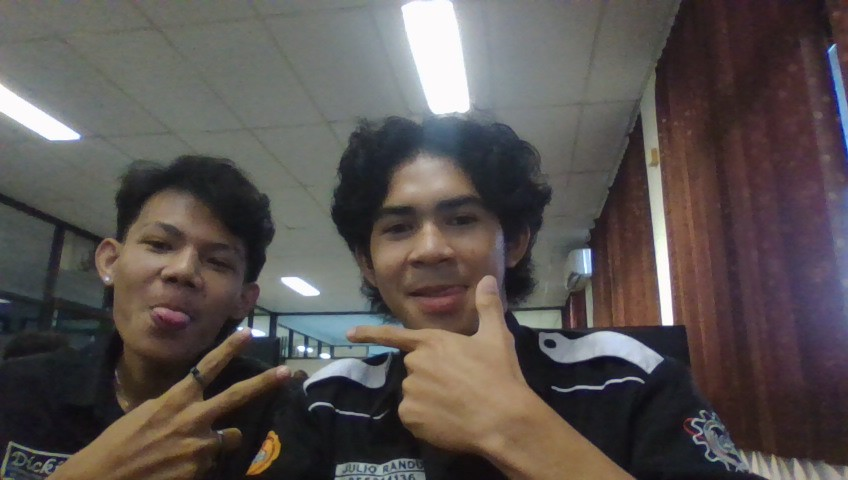

Hallo dunia kenalkan aku namanya Retno. Aku ini seorang mahasiswa dari Universitas Sanata Dharma.
Saya Jurusan informatika dan fakultasku namanya fakultas sains dan teknologi. Aku dan temanku berasal dari daerah yang sama.
Aku berasal dari NTT (Nusa Tenggara Timur).
Aku juga dengarin musik di youtube. Jika ingin mendengarkan silakan Klik disini
Jangan lupa di like saudara-saudara.
Sekarang saya sudah memasuki semester 3 dan kami baru belajar mengenai pembuatan WEB. Pembelajarankami baru mulai dari dasar.
jujur aja saya juga baru mulai belajar html dan pembuatan WEB ini sejak saya mengambil jurusan informatika ini.
| Nama | Asal Daerah | Jurusan | Kendaraan | Tempat Tinggal |
|---|---|---|---|---|
| Devan | NTT | Informatika | Ada | Tinggal di kost |
| Aldi | Jambi | Informatika | Tidak ada | Tinggal di kost |
| Putra | Manado | Informatika | Ada | Tingga di kost |